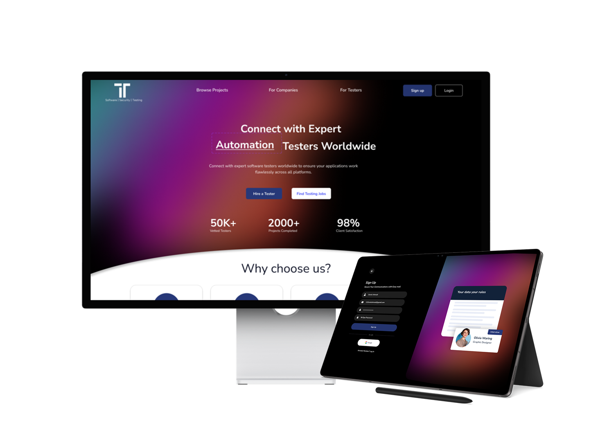
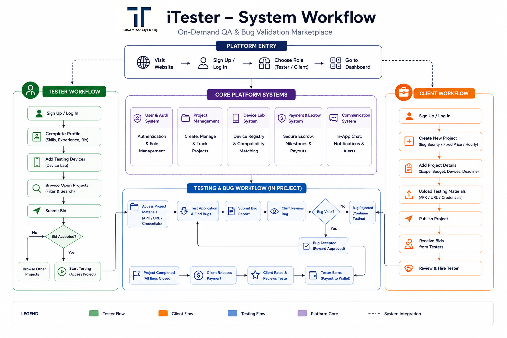

iTester Marketplace —
trust, verified.

Hiring QA talent without proof
Software companies needed QA professionals they could trust — but traditional hiring relied on resumes and interviews that couldn't verify real testing skill. Testers, meanwhile, lacked a platform that valued craft over credentials.
The core problem was trust at scale: how do you prove someone is genuinely good at quality assurance before they join your team? Generic job boards and freelance platforms offered listings, not verification. Companies risked costly mis-hires; talented testers struggled to stand out.
iTester Marketplace needed to be built from a blank canvas — a two-sided marketplace connecting companies with verified QA talent through test-based hiring, credibility scoring, and proof-of-work validation. No existing product, no templates. Just a problem worth solving.
Trust as a product feature
I authored the PRD and product architecture with one guiding question: How do you prove someone is truly good at what they do? Every screen and flow was designed to answer it.
Four trust features became the product's foundation: a Credibility Score Engine that quantifies tester reliability, Device Lab Verification for hardware and environment proof, Proof-of-Work Validation showcasing completed test artifacts, and structured marketplace matching between companies and testers.
User flows were mapped for both sides of the marketplace — companies searching for testers and testers finding work — then translated into 25+ production-ready screens. As QA Lead, I designed every flow, tested it myself, and validated the experience end-to-end before launch. Design it, break it, ship it.
Concept direction & marketplace framing
Early concept cover and marketplace framing used to align stakeholders on trust-driven positioning before detailed UI design.


Trust-driven marketplace journeys
End-to-end workflow connecting companies and QA professionals through verification, matching, and project delivery — click to enlarge.

Trust signals built into every component
Consistent interaction patterns across marketplace discovery, verification flows, and credibility scoring — designed for clarity at every trust touchpoint.


A marketplace built on verification
iTester Marketplace bridges companies and QA professionals through verified skill — not self-reported expertise. Every interaction reinforces trust from discovery through project delivery.
The homepage introduces the value proposition with clear paths to find testers or find work. The marketplace surfaces verified profiles with credibility scores visible at a glance. Tester profiles showcase proof-of-work, device lab certifications, and project history. Verification flows guide testers through credentialing step by step.
Dashboards give both companies and testers project visibility, while dedicated screens for credibility scoring and device lab management make the trust infrastructure tangible — not hidden behind the scenes.
Production-ready marketplace screens
HomepageFind a TesterFind WorkMarketplace Tester Profile
Tester Profile Verification
Verification Dashboard
Dashboard ProjectsCredibility ScoreDevice Lab
ProjectsCredibility ScoreDevice LabDrag or scroll to explore · Click any screen to enlarge
Tap any screen to view full size
From blank canvas to launch-ready product
iTester Marketplace launched as a complete product — PRD, architecture, 25+ screens, trust verification features, and end-to-end QA validation — all owned by one designer who also leads quality.
Companies can now discover QA talent with verified credibility scores and proof-of-work. Testers gain a platform that rewards demonstrated skill over resume keywords. The four trust features — Credibility Score, Device Lab Verification, Proof-of-Work Validation, and structured marketplace matching — create a hiring experience unlike generic job boards.
- Architected QA talent marketplace from blank canvas to launch-ready product
- Designed Credibility Score, Device Lab Verification & Proof-of-Work flows
- Authored PRD, user flows, wireframes, and led end-to-end QA validation
- Delivered 25+ production screens with four core trust features
Full case study document
Download the complete iTester case study — covering trust verification, device lab workflows, marketplace UX, and the full product architecture.
Download iTester Case Study (.docx)